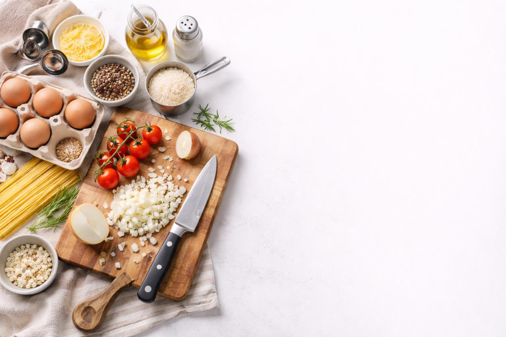

الأدوات الأساسية للطبخ
أدوات المطبخ الأساسية
| الأداة | الاستخدام | الوصف |
|---|---|---|
| سكين الشيف | تقطيع اللحوم والخضروات | يجب شحذها بانتظام |
| لوح التقطيع | تقطيع المكونات | يفضل الخشب أو البلاستيك |
| مقلاة تيفال | قلي وسلق الأطعمة | غير لاصق |
| قدر ستانلس ستيل | طبخ الحساء والمعكرونة | موصل للحرارة |
| خلاط كهربائي | خلط المكونات السائلة | يفضل بقوة عالية |
| ملعقة خشبية | تقليب الأطعمة | لا تخدش الأواني |
أنواع السكاكين الأساسية
- سكاكين التقطيع
- سكين الشيف (Chef Knife)
- سكين التقشير (Paring Knife)
- سكين الخبز (Bread Knife)
- سكاكين متخصصة
- سكين فيليه (Fillet Knife)
- سكين العظام (Boning Knife)
- سكين الساشيمي (Sashimi Knife)
- أدوات مساعدة
- مشحذ السكاكين
- حافظة السكاكين المغناطيسية